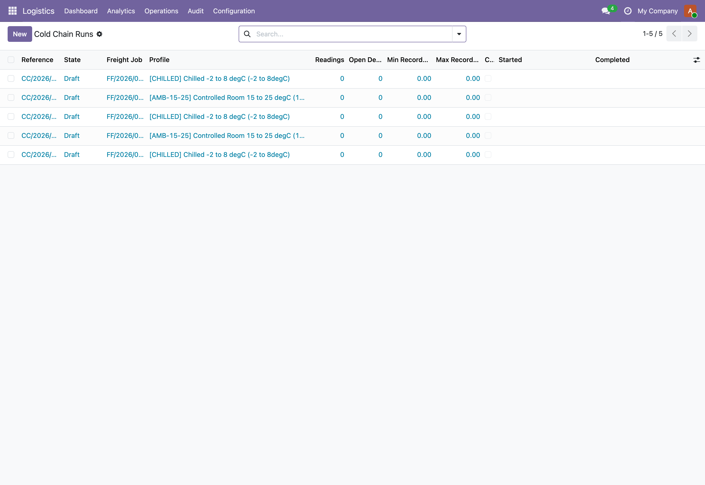

Per cargo temperature profiles, append only readings, a sustained breach deviation detector, and a per run compliance certificate, wired into the freight job.

Temperature-controlled complianceRuns bound to a freight job and a temperature profile, with reading history, deviation detection and a compliance verdict.
A reading outside the profile thresholds does not raise an alert on its own. The detector walks readings in time order, groups continuous high or low segments, and only opens a deviation once a segment lasts at least the profile alert window. Transient spikes during gate-in or a door-open are logged but do not page.
Readings are append only at the API level: after capture only the sensor reference and source can change, every other field is blocked. Run and deviation states move only through the action buttons, direct state writes raise, and each transition is logged as a structured event. The record of what happened cannot be quietly rewritten.
Each run renders a compliance certificate PDF: profile, window, min, max and average recorded, the full deviation table, and a single COMPLIANT or NON-COMPLIANT verdict driven by whether any deviation was flagged cargo impacting. The verdict line is computed from the data, not typed by hand.
A pharma shipment confirmed with Cold Chain Required spawned a monitoring run on its freight job at the PHARMA-2-8 profile (2 to 8 degC, 30 minute alert window). The operator activates the run, then loads the sensor dump through the ingest method, which writes the readings in one batch and re-scans for deviations. One sustained high segment crossed 8 degC for 45 minutes during a loading delay, so a single high deviation row is open. The operator acknowledges it, classifies the cause as loading or unloading, and because it did not compromise the consignment, leaves it not cargo impacting and resolves it. Completing the run lands it in completed rather than breached, the certificate prints COMPLIANT with the deviation still listed in full for the consignee, and every step is on the chatter and the event log.
In the shipped code today, each one a place where a cheaper module silently does the wrong thing.
A breach shorter than the profile alert window never opens a deviation. The detector measures the continuous duration of each out-of-band segment and discards segments under the threshold, so a momentary spike during gate-in is recorded as a breach reading but does not raise a deviation.
High and low excursions are separated. When readings cross below the minimum and later above the maximum, the detector closes the low segment and opens a distinct high deviation rather than merging them, so each excursion carries its own kind, window, and recorded extremes.
Re-running detection after more readings arrive extends the matching open deviation in place rather than creating a duplicate. A breach that overlaps an existing open deviation of the same kind widens that row's end time and recorded min and max instead of spawning a second one.
An excursion still active at the last reading is captured. The detector records the open segment from its start to the final reading timestamp so a run that ends mid-breach is not silently left without a deviation.
A deviation that is not flagged cargo impacting leaves the run compliant. Completing a run with open but non-impacting deviations lands in completed and prints COMPLIANT, while a single cargo-impacting deviation routes completion to breached and prints NON-COMPLIANT.
A deviation cannot be resolved without a cause classification, and cannot be voided as a false alarm without a justification in the resolution notes. The guards raise rather than allowing an unexplained close.
Once a reading is captured its timestamp, temperature, and humidity are frozen. Any attempt to edit them raises, listing the forbidden fields, so the time series stays a faithful record of what the sensor reported.
Bulk ingest is rejected unless the run is active. Readings cannot be appended to a draft, completed, breached, or cancelled run, which keeps the monitored window bounded to the active period.
Runs, readings, and deviations all carry the company and sit behind a global isolation rule, so cross-company records never leak between operators. Profiles are deliberately shared reference data across companies.
cold chain monitoring Odoo, temperature controlled cargo, pharma cold chain GDP, reefer container monitoring, frozen and deep frozen cargo, chilled and controlled room, temperature excursion detection, cold chain deviation workflow, compliance certificate PDF, freight forwarding temperature, Odoo 19 Community logistics, append only sensor readings, monitoring run lifecycle, cargo temperature profile, 3PL cold chain
The interface ships translated out of the box. Switch language in Odoo and the fields, menus, and messages follow.
Premium ERP Heritage modules that extend the same stack, each built to the same engineering bar.
Sync attendance clock events from the Employment Hero people platform into the stock Odoo Attendances app, keyed...
The Singapore country pack for the ERP Heritage Employment Hero integration
The complete ERP Heritage Employment Hero integration in one install
Sync timesheet entries from the Employment Hero people and payroll platform into the standard Odoo Timesheets app...
Real-time MRA fiscalisation for Point of Sale receipts in Odoo 19 Community, mapping each paid POS order to the M...